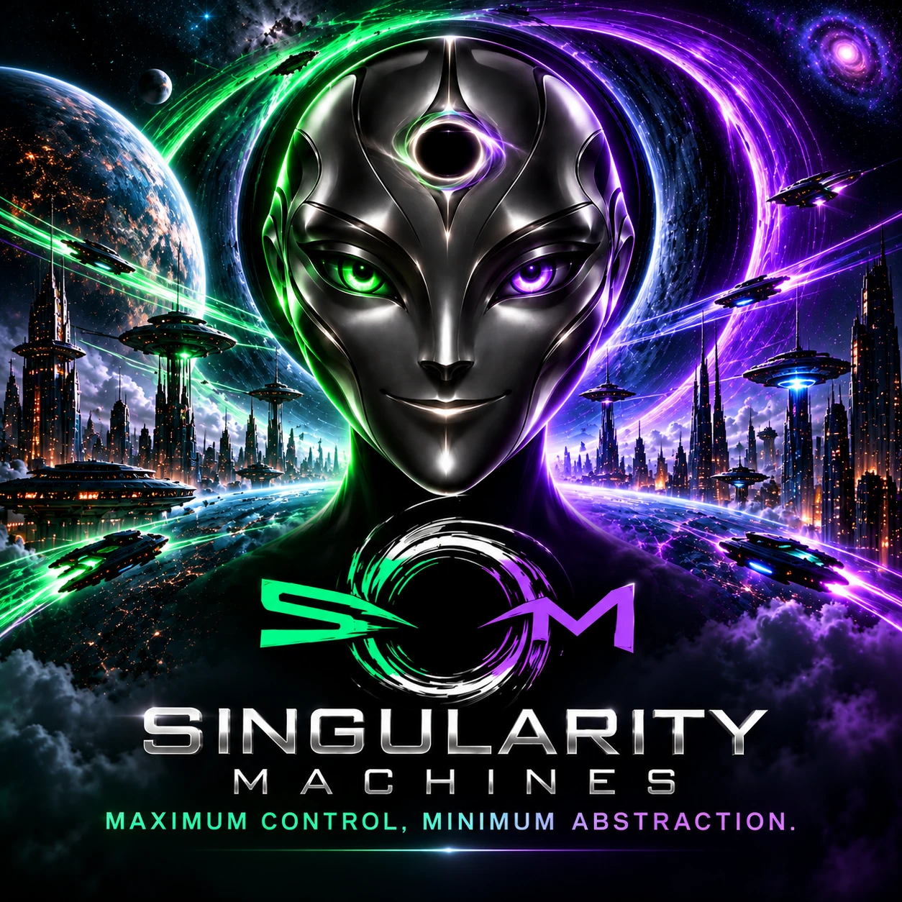

Singularity Machines
Maximum Control, Minimum Abstraction.
Services
- Fast App Creation
- Rapid Software Services in Any Tech Stack
- AI Agentic Automation
- Sovereign Compute Systems
- Local & Cloud-based Development
Projects
Projects built from first principles.
Software, AI automation, and sovereign computing.
Featured Work
13 featured projects- FEATURED PROJECT
Singularity Machines
Sovereign personal computing.
AI-controlled devices built around ownership.
In Development - FEATURED PROJECT
Singularity Language
Proof-gated programming.
Correctness before execution.
In Development - FEATURED PROJECT
Singularity Canvas
Probabilistic computing interface.
Inspect and control sampled states.
View Repository ↗ - FEATURED PROJECT
Singularity OS
Low-level operating systems.
Build closer to the hardware.
View Repository ↗ - FEATURED PROJECT
Attention Agent
AI-powered marketing automation.
Reduce repetitive content workflows.
View Repository ↗ - FEATURED PROJECT
Singularity Avatar
Interactive voice-driven avatar.
Connect synthesized speech and visuals.
View Repository ↗ - FEATURED PROJECT
Singularity DSA
Learn algorithms from fundamentals.
Progress through intuitive challenges.
In Development - FEATURED PROJECT
Singularity Keybindings
Practice essential Linux shortcuts.
Build speed through repetition.
In Development - FEATURED PROJECT
Singularity Docs
Interactive technical documentation.
Turn reference material into practice.
In Development - FEATURED PROJECT
Singularity Spacecraft
Offline autonomous spacecraft computing.
Prioritize deterministic system behavior.
In Development - FEATURED PROJECT
1Book9
One book, nine learning experiences.
Explore multilingual reading and listening.
View Repository ↗ - FEATURED PROJECT
Singularity DevTools
Browser engineering from first principles.
Learn debugging, browser internals, network inspection, and performance profiling.
Planned - FEATURED PROJECT
Singularity Machines Website
Our public development showcase.
Built with minimal infrastructure complexity.
View Repository ↗
Repository Directory
44 repositoriesExplore the complete public GitHub portfolio.
No matching repositories.
- 1Book9
- 1Book9DemoVideo
- accelerando-8192
- AI-vs.-Spaghetti-Code-Untangling-the-Legacy-Mess-
- AmazonBraketSDKPython
- AppLap
- AppLapPersistenceAxiom
- AppLapSovereignHardwareSourcingAgent
- AttentionAgentServices
- BigRedButton
- ClickStack
- ConceptSyncs
- ConceptSyncsQuizzie
- FFmpeg
- GitPaid
- I-Built-an-AI-Agent-That-Does-the-Marketing-While-You-Build-the-Business-
- ink-ai-hack-playground-knife
- LeetCode-Feedback
- LeetCodeSolutions
- LetsGoToMars
- LinkedIn-AI-Collapser
- materialscience-ai-
- maththenlower
- MinuteMaster
- NoChemicals
- qubit-quest
- QubitQuestCode
- QubitQuestCodeAllNativePython
- QubitQuestMetal
- QubitQuestQuantumAdvantage
- QubitQuestQuantumAdvantagePrototype
- QueryTheory
- QuizMe
- RiskWeaver
- safe-class
- Singularity-Avatar-I-Built-a-Talking-AI-Face-in-Hours-
- SingularityCanvas
- SingularityMachinesAnyTechStack
- SingularityMachinesSocialMediaPostSizedCard
- SingularityMachinesWebsite
- singularos
- x-algorithm
- yoon_kim_050725
- ZeroClawKnife
About Singularity Machines
Maximum Control, Minimum Abstraction.
Singularity Machines builds software, AI automation, and computing systems from first principles.
We develop across the entire technology stack—from applications and intelligent agents to programming languages, operating systems, and hardware.
Our approach is simple: understand the fundamentals, eliminate unnecessary complexity, and build practical solutions with maximum control, transparency, and independence.
Any technical challenge. Any tech stack. From concept to execution.
Connect With Us
Follow our projects, live development, and AI automation.
Singularity Machines
Let’s Build Something
Got a technical problem nobody wants to touch? We probably want to hear about it.
Tell us what you’re trying to accomplish. We’ll start with an email conversation, then offer a free phone consultation to explore how we can help.